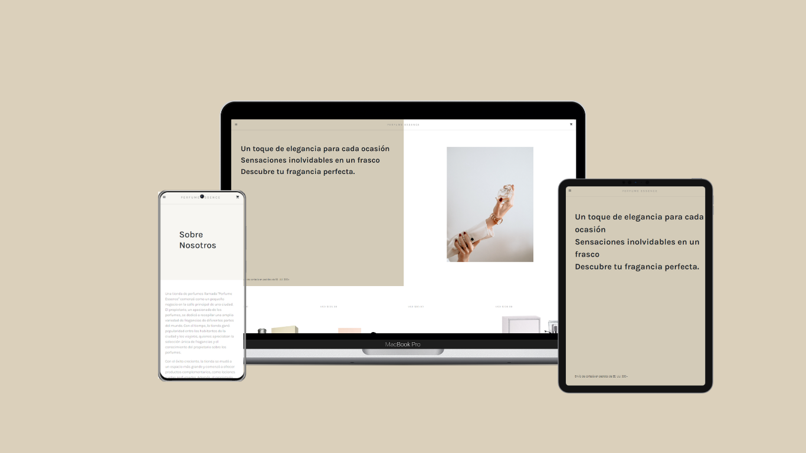

Perfume Essence

Catálogo de perfumes, una página web pequeña pero informativa que te sumerge en el fascinante mundo de las fragancias. Esta página está diseñada con enfoque en la usabilidad y la experiencia del usuario, brindando información detallada sobre una selección de perfumes de calidad.
La página cuenta con un diseño responsivo, lo que significa que se adapta perfectamente a diferentes dispositivos, desde ordenadores de escritorio hasta smartphones y tablets. Esto garantiza que los usuarios puedan acceder y disfrutar de la información sobre los perfumes en cualquier momento y lugar, desde la comodidad de su propio dispositivo.
Al ingresar a la página, te darás cuenta de la estructura intuitiva y fácil de navegar. La información se presenta de manera clara y concisa, resaltando las características clave de cada perfume, como su nombre, marca, notas olfativas y descripción. Además, se proporcionan imágenes de alta calidad para que los usuarios puedan visualizar los envases y obtener una idea de la estética de cada fragancia.
Aunque esta página no cuenta con funciones de compra, está diseñada para servir como una valiosa fuente de información y guía para aquellos que deseen explorar el apasionante mundo de los perfumes. Cada detalle se ha tenido en cuenta para ofrecer una experiencia informativa y agradable para los amantes de las fragancias.
Rol Técnico
- HTML
- CSS
- JavaScript